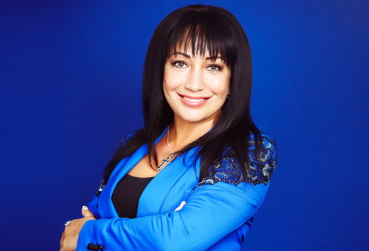
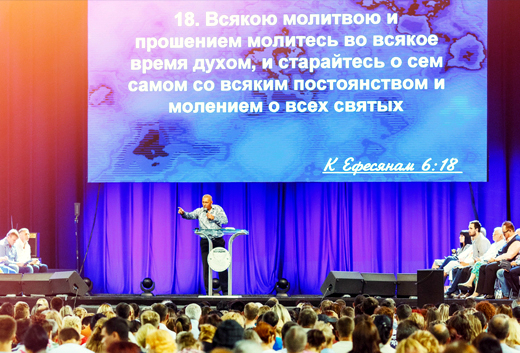
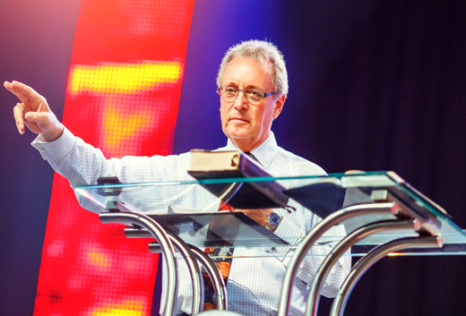
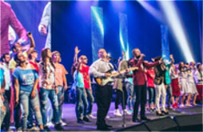

-
Время Слова Божьего
Важность Божьего присутствия в жизни, ценность призвания в духовном мире, противостояние демоническому давлению, верность и жажду перед Богом. Это лишь не многие откровения, которыми делится Апостол Владимир Мунтян в программе "Время Слова Божьего".
19:25 - 19:55
-
Жизнь в победе
Много ли раз вы задумывались, как жить в победе? Как иметь успех в каждой сфере жизни? Каждый день в 19:00 пастор Виктория Мунтян отвечает не только на эти вопросы.
19:25 - 19:55
-
Колледж "Гора Моисея" 2015
Колледж "Гора Моисея" состоялся летом 2015 года. Но мы, до сих пор, слушаем невероятные уроки, которые подарили нам величайшие проповедники. Каждый день вы имеете возможность погрузиться в Божье учение и молитвы..
19:25 - 19:55
-
Сокровища из Библии
"Сокровища из Библии" - это не просто программа об очередном учении, это невероятные Божьи истины, которые раскрывает Пастор Крейг Питтс, основываясь на многолетнем опыте служения.
19:25 - 19:55
-
Мировое миссионерство
Бенни Хинн - один из самых уникальных проповедников нашего времени. Всю жизнь, он повествует о исцеляющей силе Духа Святого и его чудес по всей земле. Сейчас мы можем стать зрителями невероятного помазания, которые испытали люди на его служениях.
19:25 - 19:55
-
Керівник організації / директор
Наталія Євгенівна Сойнікова
Дата народження:08.02.1981, громадянка України,
Адреса: вул.Шолохова, буд. 29, кв.284, м. Дніпропетровськ, РНОКПП 2962418604 -
Засновник (співзасновники)
Сойнікова Наталія Євгенівна, дата народження:08.02.1981, громадянка України,Адреса: вул.Шолохова, буд. 29, кв.284, м. Дніпропетровськ, РНОКПП 2962418604, частка статутного фонду - 50%
Гудакова Ірина Вікторівна, дата народження: 14.07.1969, громадянка України, адреса: вул. Щербини, буд.17, кв.64, м. Дніпропетровськ, РНОКПП 2539720409, частка статутного фонду - 50%
-
Власник (співвласники)
Сойнікова Наталія Євгенівна, дата народження:08.02.1981, громадянка України,Адреса: вул.Шолохова, буд. 29, кв.284, м. Дніпропетровськ, РНОКПП 2962418604, частка статутного фонду - 50%
Гудакова Ірина Вікторівна, дата народження: 14.07.1969, громадянка України, адреса: вул. Щербини, буд.17, кв.64, м. Дніпропетровськ, РНОКПП 2539720409, частка статутного фонду - 50%
-
Пов'язані особи: відсутні
Сойніков Андрій В'ячеславович, дата народження: 24.02.1981, громадянин України, адреса: вул. Шолохова, буд.29, кв.284, м.Дныпропетровськ, РНОКПП 2964001590
{kind=link}
{kind=link}
{kind=link}
{kind=link}